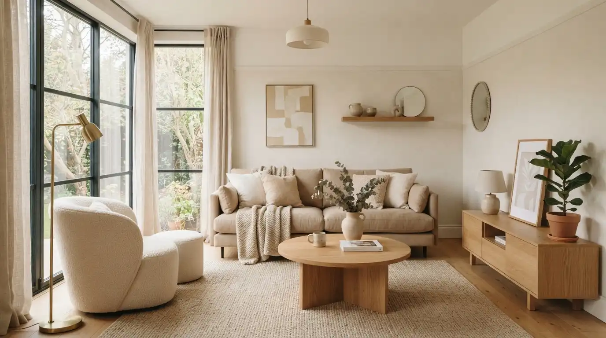

Warna Cat Rumah Minimalis Terpopuler dan Cocok

Warna cat rumah minimalis yang paling populer adalah warna netral seperti putih, abu-abu, dan krem karena memberikan kesan bersih, luas, dan mudah dipadukan dengan elemen lain.
Ringkasan Inti
- Warna netral seperti putih dan abu-abu mendominasi tren rumah minimalis
- Warna aksen gelap sering digunakan pada bagian tertentu sebagai penegas
- Kombinasi dua hingga tiga warna dianggap paling seimbang secara visual
- Pemilihan warna eksterior perlu mempertimbangkan paparan sinar matahari
- Warna interior dapat lebih fleksibel disesuaikan fungsi ruangan
Daftar Isi
1. Warna Apa Saja yang Paling Populer untuk Rumah Minimalis?
Warna yang paling populer untuk rumah minimalis meliputi putih, abu-abu, krem, dan hitam sebagai warna aksen.
Putih memberikan kesan bersih dan memperluas kesan ruang secara visual, sedangkan abu-abu sering dipilih karena kesan modern dan tidak mudah terlihat kotor dibanding putih murni. Krem menjadi alternatif yang lebih hangat, cocok untuk rumah dengan konsep minimalis tropis. Warna hitam atau abu-abu tua umumnya digunakan sebagai aksen pada kusen, pagar, atau elemen tertentu untuk menambah ketegasan desain.
Berdasarkan laporan tren warna dari salah satu produsen cat nasional pada 2024, warna netral seperti putih gading dan abu-abu muda tercatat sebagai dua pilihan terlaris untuk kategori rumah tinggal selama tiga tahun berturut-turut.
2. Bagaimana Cara Memilih Kombinasi Warna yang Tepat?
Kombinasi warna yang tepat untuk rumah minimalis sebaiknya menggunakan maksimal tiga warna dengan satu warna dominan.
Beberapa pola kombinasi yang umum digunakan:
- Warna dominan netral seperti putih dipadukan dengan aksen abu-abu gelap
- Krem sebagai warna dasar dipadukan dengan cokelat kayu pada elemen tertentu
- Putih dipadukan dengan hitam untuk kesan modern dan kontras yang tegas
- Abu-abu muda dipadukan dengan biru dongker sebagai aksen pada bagian tertentu
3. Apa Perbedaan Pemilihan Warna Eksterior dan Interior?
Pemilihan warna eksterior perlu mempertimbangkan ketahanan terhadap cuaca, sedangkan warna interior lebih fleksibel mengikuti fungsi dan suasana ruangan.
Untuk eksterior, sebaiknya memilih cat dengan lapisan tahan cuaca agar warna tidak mudah pudar akibat paparan sinar matahari dan hujan. Sementara itu, warna interior dapat disesuaikan per ruangan, misalnya warna netral untuk ruang tamu agar terasa luas, atau warna sedikit lebih hangat untuk kamar tidur agar terasa nyaman.

4. Tips Memilih Warna Cat agar Tidak Cepat Terlihat Kusam
Beberapa tips berikut dapat membantu menjaga tampilan warna cat tetap optimal dalam jangka panjang:
- Pilih cat dengan kandungan tahan noda untuk area yang sering tersentuh
- Gunakan warna terang pada dinding yang minim paparan sinar matahari langsung
- Hindari warna terlalu terang pada area yang dekat dengan jalan berdebu
- Lakukan pengecatan ulang secara berkala sesuai rekomendasi produsen cat
5. Kesimpulan Praktis
Warna cat rumah minimalis sebaiknya dipilih berdasarkan kombinasi netral yang seimbang, disesuaikan dengan fungsi ruangan serta kondisi cuaca di sekitar rumah. Pemilihan warna yang tepat dapat memperkuat kesan minimalis sekaligus menjaga daya tahan tampilan rumah dalam jangka panjang.